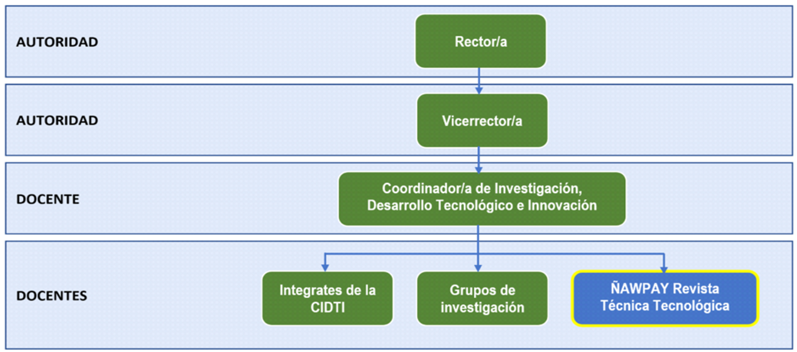

De acuerdo al Órgano Colegiado Superior de ISTA quien aprobó las reformas al Reglamento de Investigación, en su Tercera Sesión Extraordinaria llevada a cabo el 06 de febrero de 2020, mediante Resolución Nro. ROCS-SE.03-01-2020. “La Coordinación de Investigación, Desarrollo Tecnológico e Innovación, es la instancia institucional que lidera, fomenta, coordina y gestiona los procesos de investigación que realice el Instituto para mejorar la calidad académica de los métodos didácticos y contribuir al desarrollo científico, tecnológico, y humanístico del país.” Estará representada por el Coordinador de Investigación, Desarrollo Tecnológico e Innovación, quien contará con el apoyo de un equipo de docentes (mínimo 4) quienes serán designados por el Órgano Colegiado Superior, trabajará bajo la supervisión de Vicerrectorado Académico de acuerdo a la estructura organizativa del Instituto establecida en el Estatuto Institucional.
La estructura orgánica para el desarrollo de la investigación en el Instituto Superior Tecnológico Del Azuay, estará integrada por: Los Directivos, la Coordinación de Investigación, Desarrollo Tecnológico e Innovación, Desarrollo Tecnológico e Innovación, los Grupos de Investigación, y los integrantes de los equipos de trabajo conformados para la creación y gestión de revistas institucionales. En el desarrollo de las actividades de investigación también participarán las autoridades académicas de la Institución.
